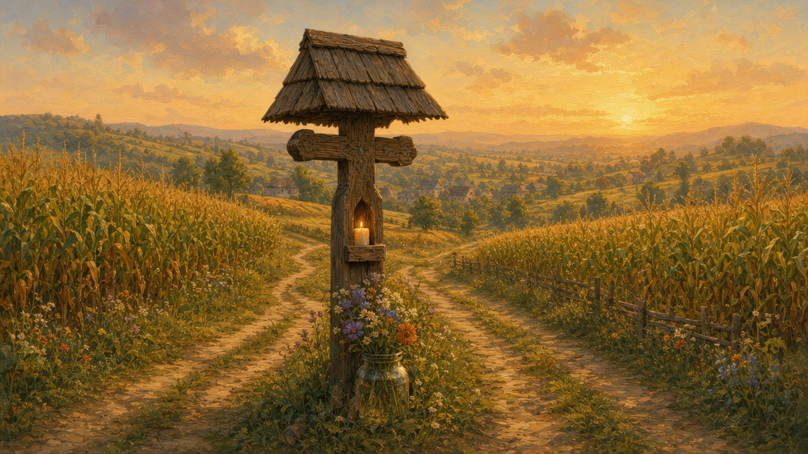
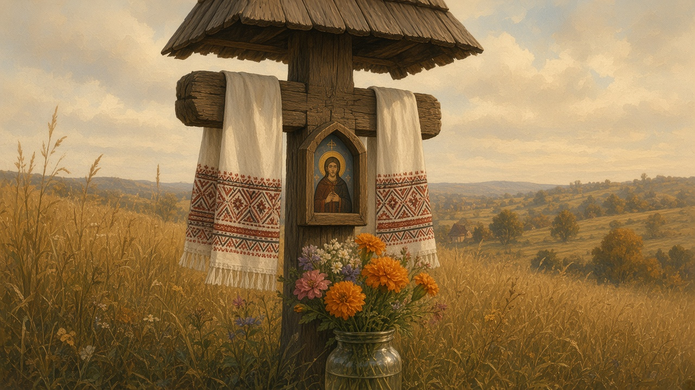

The wayside cross
Troiță, and the definite troița. Not the church in the middle of the sat. The smaller cross or shrine at a fork, a field edge, or the last bend before the houses begin — a place to stop without going in.

At the fork
A troiță stands where the road has to choose, or where the village wants you to know you have arrived. At a răscruce, at the edge of maize, at a bridge — that water habit is on rivers — at the rise where the next valley comes into view. You see it from the cart, later from the car, often before you see the biserică. It is not a monument you buy a ticket for. It is timber or stone that has been watching the same dust for longer than the people who still nod at it.
Some have a little roof. Some are only a cross. Flowers in a jar — plastic now as often as from the garden. A short prayer cut into the wood, a name, a year. The fence around a yard is a different claim; that carved oak is on gates. This one belongs to the road. The larger map of the lane, the shop, and whose dog that is sits on villages.
Oak, metal, stone
In the north the old ones are oak, the same timber as the church roof and the poartă. A carpenter who could notch a Maramureș nave could cut a smaller cross for the fork: rope motif, a sun, a niche for a candle. That craft sits with wooden churches and the valleys on North. Elsewhere you meet painted metal, a stone pillar, a concrete cross from a later decade with a tin roof that rattles in wind. The type is the same even when the material is not: a Christian mark at the edge of work, not only at the altar.
You do not need a catalog of famous troițe. Plenty of unmarked ones still stand in a commune that does not appear on a brochure. Weather-gray wood leans and still holds. Lichen in the cuts. A new one in metal because the oak finally went. An old one sitting behind a fresh asphalt curve that no longer needs that fork, and standing anyway.
A pause, a candle
A shepherd coming down with the flock, a man walking to the next sat, someone whose bus is late — they pause. A candle in the niche if there is a niche. The sign of the cross. A short prayer that does not need an audience. Belief, the parish, and the icon corner in the house are on Orthodoxy. The troiță is the same faith, only outdoors and unsupervised. Children are told not to play against it and then they lean on it anyway. On a feast someone refreshes the flowers. The rest of the year the wood does the watching. In winter the roof holds a cap of snow and the path ices the way the well does. Colindători walk past it on the way to a door; they do not sing to the cross. A flock coming down still pauses — that walk is on shepherds.
When a household or a village raises a new one, a priest comes out to bless it, the way a house or a well is blessed. The day may sit near a hram or simply on a Saturday when people can gather. That calendar — the year as the parish keeps it — is on the year. You eat in the grass. You go home. The cross stays.
Why it stands
The wood at the fork was put there for a reason, and the reason is often a promise. A făgăduință: a vow from a hard week, paid later in timber and a day of neighbors. One household raises it, or a few houses do it together. The name on it may be the person who promised, or the saint the promise was made to.
Some mark a death on the road. A bend, a later curve, a name so the next person slows. The family raised it. The lane left it there. The road and the sat around that bend are on villages. Some are thanks. A soldier who came home — the house had said there would be a cross if he did — and the timber went in where people already pass. You do not need the story of every name. You need the habit of noticing that this one was raised for a person — a promise, a death, or a return.

The towel before a feast
Before the autumn rains settle, someone walks out with cloth. A ștergar — the woven or embroidered towel the house already knows from the icon corner — is tied on the arms, or hung under the little roof so the ends move. Last year’s is gray at the fold, or it has gone. The new one is the same work as the towel on crafts: a narrow border, red and black, cotton or hemp that will take the weather. Flowers go in the jar on that same walk, garden stems while the beds still have them.
A feast is the other day the cloth and the jar are changed. A hram, or another day the parish keeps — that calendar is on the year. Through the ordinary months the towel fades and the jar sits. When the cold comes the cloth stiffens; the yard in that season is on winter. It is the upkeep of the cross, the way a gate gets a nail before it splits. You do not need a list of the feasts. You need the habit of noticing whether the towel on the arms is this year’s, or the one the rain already had.
Between house, church, and road
A locked gate in winter may mean the family is away; the troiță on the approach does not leave with them. Between the house, the church, and the road, this is the mark that is nobody’s yard and everybody’s. The sat claims the lane. The biserică claims the Sunday. The troiță claims the in-between: the field path, the traveler, the shepherd, the person who is not going to liturgy this week but will still slow the car.
This page is only that pause: wood or stone, a candle niche, a towel changed before a feast, and the habit of knowing which fork still has one — and why it was raised.